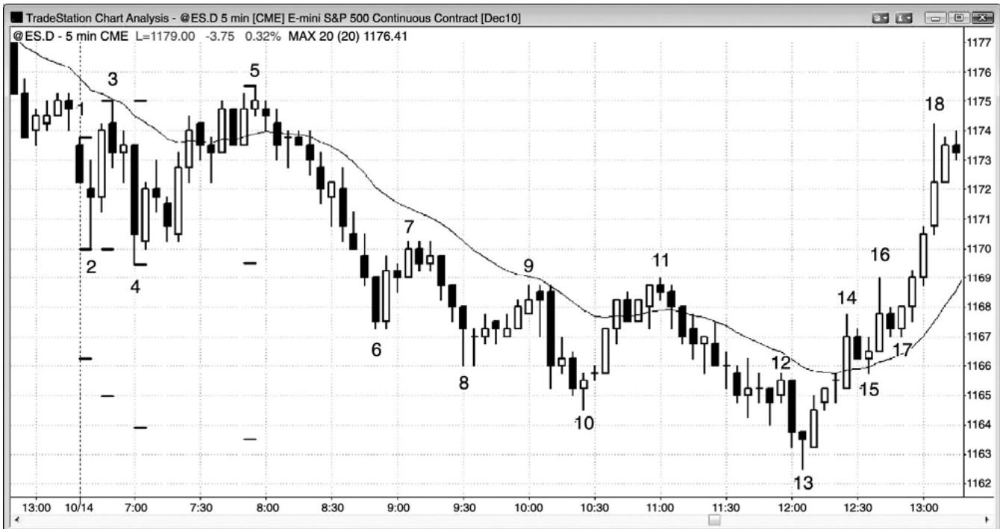
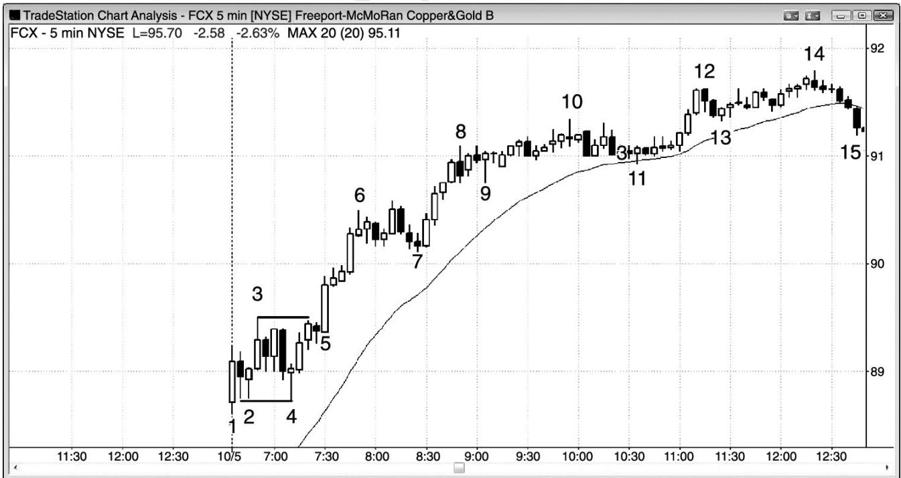
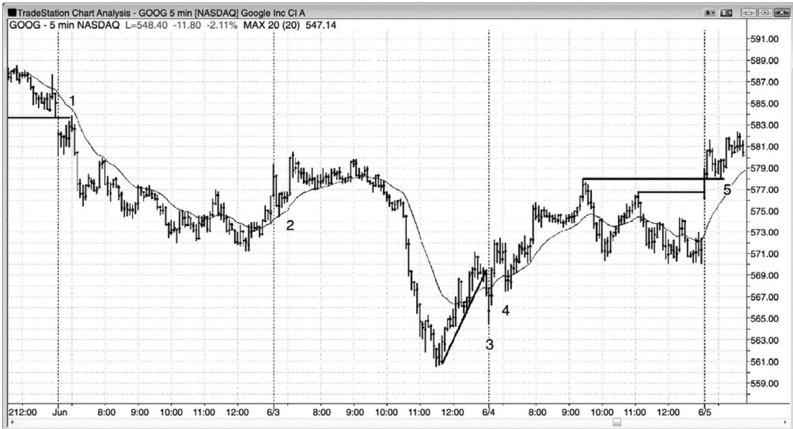
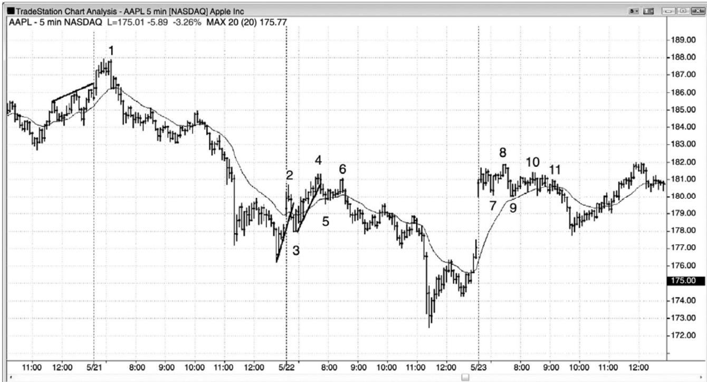
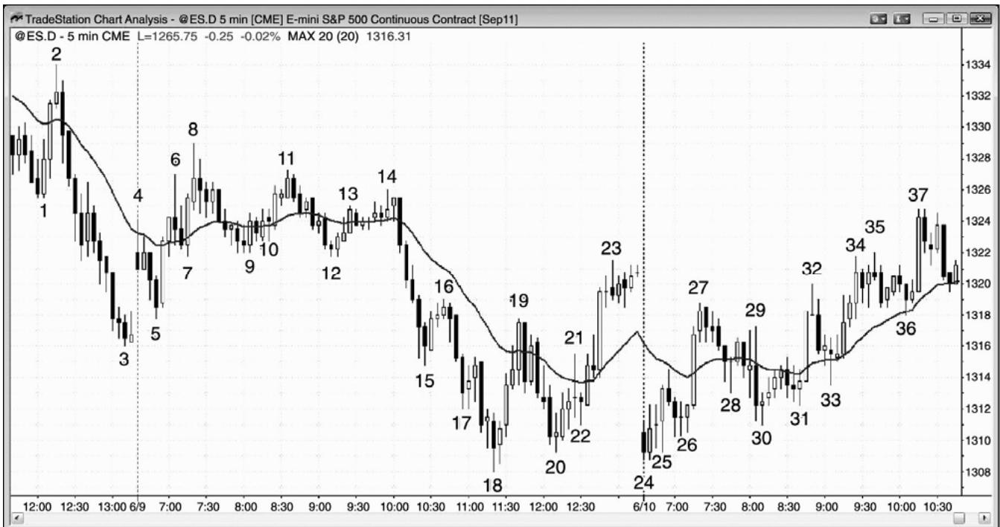
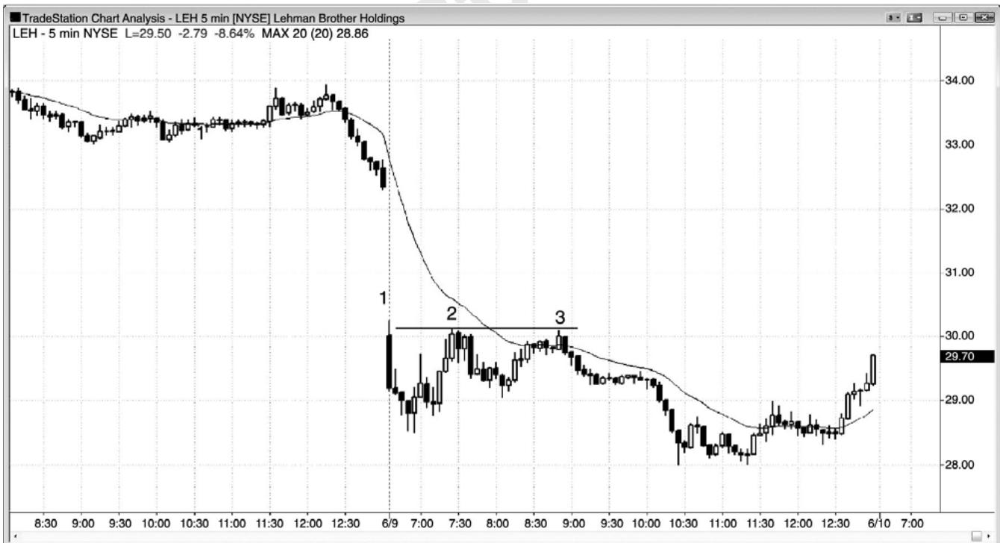
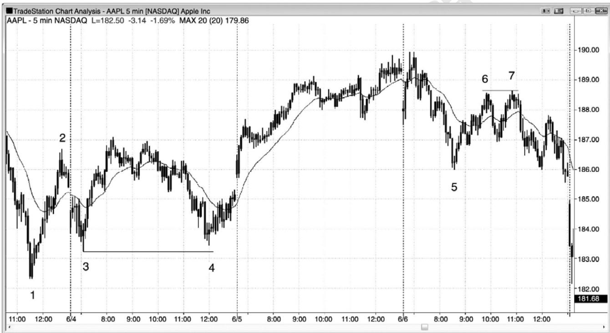
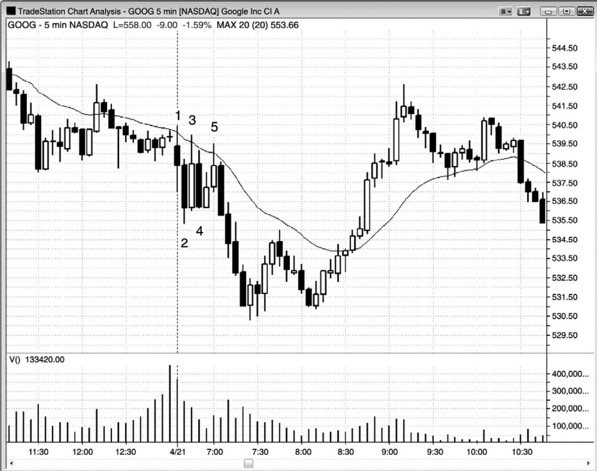
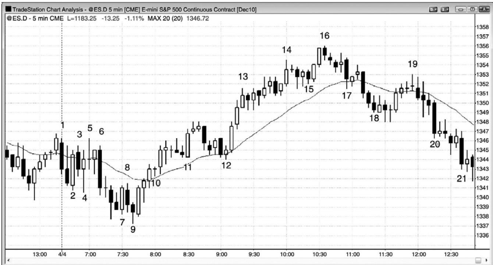

第19章 开盘形态和反转¶
第 19 章 开盘形态和反转
机构交易员们有些订单要在一天开盘前执行，他们希望在尽可能好的价位执行。举例说明，假定他们手中几乎全是买单，市场以一个很大的下跌缺口开盘，如果他们感觉那个较低的开盘代表着不会持续多长时间的很高的价值，那么他们将会立即买进。如果他们认为市场将会小幅下跌，那么他们会等着在更低价位买进。反之，如果市场以一个上涨缺口开盘，那么他们可能认为市场应该回撤。如果他们那样认为，那么对于他们来说就没有入场动机，因为他们预期不久将能以更低价格买进。这就产生一个卖出真空，市场可能快速下跌，因为机构多头只是在等待以更好的价格买进。一般来说，他们会等待市场到达一个支撑位，比如均线、趋势线、测量运动目标、或者波段高点或低点。如果有足够多机构的订单偏向于买进，而且他们都开始在大致相同的价位买进，那么迅猛的下跌可能会向上强势反转。抛盘不是由强势空头引起的，而是由强势多头等待市场跌至支撑位引起的，他们在支撑位持续买进，压倒空头。这是真空效应；市场受到吸引，快速跌至某个价位，那里有大量的强势买家在等待。
当机构有大量卖单在开盘进入市场时，会发生相反的情况。常常会形成一个买进真空，吸引市场快速上涨，然后空头突然出现，驱动市场猛烈下跌。他们从开盘起就是看跌的，但是，如果他们认为市场正要上涨至某个阻力位，那么他们不会马上做空，而是等待市场到达他们认为不会继续走高的价位。如果他们认为市场还会小幅上涨，那么现在做空就是不合理的。在那一点，他们开始做空，压倒多头。结果形成一个开盘向下反转。
这些迅猛的向上反转和向下反转是开盘反转，常常会形成当日高点或低点。如果交易者们明白正在发生什么，那么就不会受骗相信所有迅猛的运动都是会引起通道的尖峰，他们会准备好在反转时将交易波段化，有时可能在一天的大部分时间里持有部分头寸。
虽然大部分交易日都有开盘反转或开盘起趋势，有 50%到 60%的机会赚到至少是风险两倍的利润，但是初学者们将很难决定哪个常见反转架构是最好的。因为存在太多的变量，所以任何一个架构的准确胜率都不可能非常确切地知道，对于开盘区间内的架构，这一点尤为正确，但是我在使用的变量可以作为合理的指导方针。大部分交易日，开盘区间内都会出现若干次合理的反转，但是他们只有 30%左右的几率引出一笔回报至少为风险两倍的波段交易（虽然很多反转有 60%左右的几率产生与风险一样大的回报）。另外，最早的有时是最好的，但是随后的多次反转常常会回撤越过入场位，使初学者们因害怕而退出。初学者们可以选择一个自我感觉比较强的反转，然后依靠自己的保护性止损，允许出现回撤，等待最终突破，也可以刮取与风险相等的回报，如果下个反转架构看起来不错，然后就可反向交易。对于大部分交易者来说，如果他们自己认为的好架构，依靠自己的保护性止损，允许出现回撤，仅当反向强信号形成时离场，那么获利的可能性就较大。
对于所有市场而言，当天第一棒大约有 20%的可能成为当日高点或低点。如果它是一条没有长尾线的强趋势棒，那么就有30%的可能成为当日高点或低点。50%的交易日中，高点或低点都在头 5 棒内形成，90%的交易日中，高点或低点在开盘一两个小时内形成。尽管大部分反转不会引出至少为风险两倍的利润，但是，如果交易者持有它们等待波段，那么最后大部分都会成为刮头皮。盈利交易的利润通常至少与亏损交易的亏损一样大，偶尔出现的较大的盈利交易使得这种方法值得使用。或者，交易者可以只准备做回报至少与风险一样大的刮头皮。当日高点通常来自某种类型的双重顶，不过两个高点常常不在同一价位，而当日低点通常来自双重底。一般来说，如果当天正形成反转，那么交易者应该等待，直到出现一个双重顶或双重底，然后再寻找波段交易。一旦一个双重顶或双重底形成，那么就有大约 40%到 50%的几率引出一个波段，具体情况取决于背景和架构，形成当日一个极点。
大部分交易者应该努力成为捕捉并利用最佳开盘反转的专家，让这些波段交易成为他们交易的基础。举例说明，在电子迷你中，当平均区间约为 10 到 15 点时，看起来不错的开盘反转 4 点波段交易（背景很好，而且有一条不错的信号棒）的成功率常常只有 40%左右（当架构非常强时，成功率可能为 50%到 60%）。不过，在达到利润目标或者反转信号形成（交易者可以以较小的亏损或小幅利润离场）之前，两点止损被击中的概率常常只有 30%左右。这使得这种交易的交易者方程非常有利。如果交易者们在 10 笔交易中有 4 笔盈利 4 点，那么他们在波段交易上的利润就是16点。如果他们接下来可能有3笔亏损了两点或更少，3笔盈利约 1 到 3 点，那么最后在那些交易上大约是盈亏平衡。当交易者筛选恰当的架构时，这是相当典型的情况。于是，交易者在 10 笔交易上的利润大约是 16 点，平均每笔交易的利润是 1.6点，对于日内交易者来说是不错的。
P206
当没有反转时，尖峰实际上可能跟着一条通道，当天有可能成为一个尖峰和通道趋势日。如果出现反转，但是反转只持续了几棒，然后便向尖峰方向回转，那么反转已经失败，已经变为一个突破回撤架构，随后通常是某种类型的通道。举例说明，如果市场在当天头三棒向上强势反弹，但是然后出现一条空头反转棒，那么很多交易者将会在那一棒下方反转做空。然而，如果尖峰强劲，反转疲弱，那么更多交易者将假定反转尝试会失败。他们将把买进止损单设在任意回撤中前一棒的高点上方，如果没有回撤，那么就包含空头反转棒的高点。如果市场上涨，那么小幅抛盘就变成一波突破回撤，反转尝试已经失败。如果有些多头对于上涨运动的力量特别自信，那么他们会在反转棒及其下方设定买进限价单。
开盘总是会引起突破或反转，有时既有突破也有反转。除了缺口开盘，常见开盘形态与当天其他任意时间出现的形态相同，包括：
• 开盘起趋势，在第一本书的第一部分讨论过。
• 突破并反转，是失败的突破。寻找支撑或阻力区的反转，比如均线、趋势线、趋势通道线、波段高点和低点（特别是昨天的高点和低点）、突破区、交易区间的顶和底、以及测量运动目标。
• 突破回撤（未能令市场反转的失败的突破）。
大部分交易日，当天的高点或低点大约在第一小时之内形成。一旦当天某个极点形成，市场就会朝着当天另一极点方向反转。显然，开盘起趋势日没有反转，但是市场仍然朝着另一极点前进，另一极点通常靠近当日收盘。开盘反转常常是可识别的，可能提供一个很棒的波段交易机会。开盘第一波运动的速度常常很快，而且幅度达到很多点，很难相信它会突然反转方向，但这是一种常常发生的现象。反转通常发生在某个关键点，比如对昨天高点或低点的测试、昨天或今天的波段高点或低点、昨天或今天交易区间的突破、趋势线或趋势通道线、均线、或者不同时间框架图表或全球图表上的上述关键点。虽然最佳架构是在 60 分钟或日线图上，但是几乎总会出现价格行为理由，可以完全根据 5 分钟白天时段图交易，所以交易者只需观察他们用于交易的一张图表。
开始的价格行为常常提示当天的走势特征。如果第一棒是一个十字星，位于昨天收盘区间的中部，那么它就是一个单棒交易区间，形成交易区间日的几率增加。如果第一小时出现很多重叠棒，尾线很长，并且多次反转，那么形成交易区间日的几率也会增加。反之，如果第一小时内出现一个向上或向下的缺口，然后是持续三棒或四棒的空头尖峰，而且走势棒很长，几乎没有重叠，只有短小的尾线，那么形成空头趋势日的几率增加。大约在第一小时之内，交易者们常常寻找一对连续的多头趋势棒。如果出现一对连续的多头趋势棒，那么交易者们将会把它们看作市场总在场内的征兆，至少可以做刮头皮。这就意味着他们认为市场可能处于一轮多头趋势的早期阶段。在出现足够的坚持到底使交易者们相信很可能形成某种测量运动之前，很多交易者将会大部分或全部做刮头皮。这就使得大约在第一小时之内常常出现多次反转。反之，如果出现连续的强空头趋势棒，那么他们会假定市场是总在场内空头，当天正试图成为一个空头趋势日。举例说明，如果已经出现连续的强空头趋势棒，然后一棒上涨，超越了前一棒的高点，那么很多交易者会在那么回撤棒的下方做空头刮头皮。如果背景恰当，那么他们可能认为回撤是一轮大趋势的起点，他们将会把大部分或全部交易波段化。
开盘区间常常给出当天走势如何展开的线索，为当天剩余价格行为提供支撑和阻力，并且引出测量运动目标。对于开盘区间的顶和底，几乎总是有若干种选择，因此，对于测量运动基准所包含的棒线以及形成测量运动所需时间的长短，几乎不会有完全一致的观点。一般而言，如果有交易区间，那么就是交易区间的高度，或者是开盘 30 么 90 分钟最长腿的高度。有时，一条腿内将包含两条或三条较小的腿，有时将会有一波回撤，然后一个短暂的更高高点或低点或更低高点或低点。如果出现那个新的极点，那么有些交易者将使用它来扩大交易区间，另外一些交易者则使用原来的区间，把新的极点看作毫无意义的过冲。
把开盘区间的高度划分为三类，是很有帮助的。如果开盘区间只有近日区间高度的 25%左右，那么交易者们将会在该区间向任一方向突破时入场。一个月有那么一两次，这将成为一个开盘起趋势日，回撤幅度很小，趋势不停地延伸。
P207
如果开盘区间大约是近日区间高度的三分之一到一半，那么交易者们将假定该区间将增长至平均区间高度。当天通常包含一些交易区间活动，然后向上或向下突破。大约三分之二的时间，它会成为一个趋势日，通常是一个趋势型交易区间日，尽管有可能形成任意类型的趋势日。突破一般会到达某个测量运动目标附近，测量基准是开盘区间的高度。当天晚些时候，市场通常会返回测试突破点，然后常常突破进入早先的区间。如果向开盘区间的回转很强，而且市场收盘于早期区间的另一侧，那么当天就成为一个反转日。实际上，这是反转日形成的最常见方式。在另外的三分之一时间里，市场只是略微超出开盘区间，然后反转突破区间另一侧，然后返回区间之内。当这种情况发生时，当天通常成为一个小型交易区间日，但是，有时第二次突破可能引起一个反向的趋势型交易区间日。
第三种可能是开盘运动幅度较大。这通常是由强尖峰引起的，当天常常成为一个尖峰和通道趋势日，但是，有时会引起高潮反转，通常是在一个小型最终旗形之后。
重要的一点是要认识到，如果市场开盘形成一波很强的运动，然后反转，那么开始的强运动便表明市场的力量很强，可能会在当天晚些时候返回。举例说明，如果市场在当天头四棒强势抛盘，然后向上反转进入一轮强多头趋势，那么你应该记住那轮开始的空头趋势，而不是认为多头将会一直控制市场，直到收盘。那波开盘下跌的力量表明空头愿意在当天较早时候积极做空，尽管已经形成一轮多头趋势，但是他们可能会在当天晚些时候寻找另一次机会。因此，如果多头趋势中出现很强的调整，那么不要忽略它成为另一次趋势改变的可能性，这次是返回空头趋势。
第一小时内的形态与当天晚些时候的形态相同，但是反转常常更迅猛，趋势的持续时间常常更长。交易利润最大化的关键一点，是把可能成为当日高点或低点的任意头寸的一部分波段化。如果交易看起来特别强，那么就把所有头寸波段化，然后在利润达到初始风险的一到两倍时把交易的三分之一到一半部分了结。如果你认为自己可能是在当日低点买进，你的初始止损位于信号棒下方，大约比你的入场价位低 3 点，那么就在获利 2 到 4 点时了结四分之一到一半，在获利 4 到 6 点时再了结四分之一到一半。或者，不使用固定的限价单，而是在获利两点后的首个暂停部分了结，在获利 4 点后的首个暂停再了结一部分。持有剩余合约，直到出现明确而强烈的反向信号，或者直到你的盈亏平衡止损被击中。准备在每个顺势架构加仓，比如强趋势中向均线的两条腿回撤。对于这些附加的合约，大部分或全部做刮头皮，但是继续把一些合约波段化。
有些反转开始得很平静，只是略微趋势运动了很多棒，看起来只是原来趋势中的又一个旗形，但是，接下来市场强有力地突破进入反向趋势。举例说明，空头旗形可能向上突破，市场可能反转进入一轮多头趋势。其他反转从入场棒开始便表现出很强的动能。准备接受所有可能，试着选择每一个信号，特别是当信号很强时。难点之一是，反转常常是迅猛的，交易者们可能没有足够的时间说服自己反转架构实际上可能引起反转。然而，如果出现一条强趋势棒作为信号棒，那么成功率是很高的，你必须做那笔交易。如果你感觉自己需要更多时间来评估那一架构，那么就至少入场一半或四分之一的头寸，因为那笔交易可能突然运动得非常远、非常快，你需要加入其中，即便只是很小的规模。然后，准备在第一次回撤时加仓。
与作为反转形态的双重底回撤不同，双重底多头旗形是一种延续形态，是在多头趋势已经开始后形成的。从作用上来看，它与双重底回撤是相同的，因为都是买进架构。
同样地，双重顶空头旗形旗形也是如此，它是正在行进中的空头趋势中的延续形态，不是反转形态，比如双重顶回撤。不过，两者都是做空架构。在一波强下跌运动和回撤之后，空头趋势恢复，然后市场再次回撤至大约与第一次回撤相同的价位。这种交易区间是双重顶空头旗形，它是一种做空入场架构。通常，第二波回撤将略低于第一波，正如在空头趋势中所预料的那样（每个波段高点倾向于低于前一个波段高点）。入场是使用设在架构棒下方1个跳动处的止损单。
有时，市场在开盘 3 到 10 棒左右形成一段交易区间，包含两次或多次反转。如果该区间与平均每日区间相比较小，那么就很可能出现突破。第一棒之后，如果既出现了向上反转，也出现了向下反转，那么有些交易者将会在这个小型区间突破时入场，寻找一波测量运动。交易者们会在区间突破时入场，但是，如果他们能够在区间顶部或底部的小型棒反向入场，或者等到突破之后，在失败的突破或突破回撤入场，那么风险会较低，就像在任意交易区间内交易一样。

P208
当开盘区间的高度约为近日平均区间的一半时，市场通常会突破开盘区间，尝试令它加倍。有时，开盘区间有很多种选择。为什么有一个是正确的呢？通常是由于不同的交易者会根据不同的开盘区间制定决策，但是在图 19.1 所示的一天中，对于获利了结或反转，没有精准的向导。大部分支撑位，比如测量运动投影，没有引起反转，因为市场具有惯性，所以倾向于继续做刚才一直在做的事情。这就意味着大部分反转尝试失败。然而，当市场最终反转时，总是在某个支撑位。如果支撑位处出现一个强反转架构，那么就更有可能引起一笔可获利的交易。截止棒 5，当日区间仍然只有近日平均区间的一半，因此，几率偏向于区间再明显增加。每个新的反转，开盘区间都在扩大，但是截止棒 6 的抛盘非常强劲，所以突破很可能引出一波近似的下跌测量运动。
当天成为一个趋势型交易区间日，收盘前向上突破，回到上侧区间，这种情况是很常见的。这里，当天收盘靠近上侧交易区间的顶部，成为一个反转日。大多数反转日都是从趋势型交易区间日开始的。如果交易者们明白这一点，就可以在市场从下侧区间底部向上反转时准备把部分交易波段化。
第一小时之内，只有约 25%的反转会产生波段，所以最好是先刮头皮，直到出现双重底或双重顶或者明确的总在场内架构，形成波段的几率较高时，才考虑波段交易。今天是一个非常普通的交易日，开盘后的很多架构只适合刮头皮。棒 3 与棒 1 构成一个双重顶，因此有
50%左右的几率成为当日高点。它也是向均线的突破回撤。棒4与棒2构成一个双重底，因此有 50%左右的几率成为当低点。两者都没有成为当日高点或低点。90%的交易日中，高点或低点都出现在开盘后的一两个小时内，而且通常是由某种类型的双重顶或双重顶形成。棒 5 与棒3形成一个双重顶，一个小型楔形顶，一条均线缺口棒，它成为当日高点。
当散户们控制每日成交量的较大部分时，他们会根据日线图在开盘前下单，为开盘缺口和反转加力。举例说明，如果出现一条多头反转棒，那么交易者们会在收盘后看到它，并且在下次开盘前设置订单在那一棒的高点上方买进。他们非常担心错过买进，于是他们情愿在开盘买进，即便是在那一棒的高点上方买进。这常常导致市场向上跳空，以便找到足够的卖家愿意站在交易的另一方。一旦这些过度急切的买家在抬高的价位入场，市场就会下跌，跌至机构认为存在价值的价位。然后，他们重仓买进，令市场向上反转至一个新的高点，于是，开盘多头反转形成。开盘后暂短而小幅的抛盘，在日线图上的多头趋势棒底部形成一条尾线，那在多头趋势日是很常见的。在空头日之后，相反的情况常常发生。绝望的多头急于在开盘离场，于是他们情愿在当天的第一笔交易卖出。市场常常不得不向下跳空，以便找到足够的买家。一旦他们的卖单执行完毕，市场就会上涨至机构感觉存在卖出价值的价位，他们的卖出令市场向下反转，创出当日一个新的低点，当天常常成为一个空头趋势日。

P209
如图 19.2 所示，开盘区间的高度会给出当天晚些时候将发生什么的线索。在这张Freeport-McMoRan（FCX）的 5 分钟图上，开盘区间约为近日平均日区间的四分之一。几棒之后，当交易者们看到区间可能较小时，大部分人会忽略第一棒，然后寻找一个上涨尖峰和一个下跌尖峰。市场一跌破棒 3，它就成为一个上涨尖峰（向下反转）。一旦市场向上超越棒 4，它就成为一个下跌尖峰（向上反转）。在那一点，很多交易者会把那两个尖峰看作一个突破模式架构，在顶部尖峰的上方 1 个跳动处设定买进止损单，在底部尖峰的下方 1 个跳动处设定卖出止损单。一旦一张订单被执行，另一张订单就成为初始保护性止损。入场之后，市场反转方向，交易者常常会把保护性止损的幅度加倍，如果止损被击中，计划反转头寸。
交易者们常常能够在突破前入场。这里，举例说明，出现一个大型上涨缺口开盘（陡峭的均线显示出这一点），第一棒是一条多头趋势棒，所以很有可能形成一个多头趋势日。一旦棒 4 从向下突破棒 2 ii 形态一个跳动后向上反转，很多交易者会在棒 4 双重底多头旗形信号棒的上方做多（记住，当日低点常常来自某种类型的双重底）。还有一些人会在棒 5 刚刚向上超越小型空头内包棒时买进，也有一些人会在向上突破棒 3 时买进。
当开盘区间像这样较小时，那一区间内的回撤较小；当当天突破并做趋势运动时，回撤常常仍然较小，比如在这张图中。最后一两小时内，通常会出现幅度为早期回撤两倍的回撤，那发生在从棒14开始的抛盘。
在第一小时内，交易者们常常寻找两条连续的趋势棒，当它们出现时，很多交易者便会认为市场已经有了总在场内方向。举例说明，棒 2 处出现连续的多头趋势棒。由于它们的实体较小，尾线较长，所以大部分交易者需要更多的证据才能认为总在场内方向是向上的。证据出现在棒 4 后面的两条多头趋势棒。在那一点，很多交易者认为总在场内方向是向上的，因此，他们开始做多头波段交易，止损设在双棒尖峰的底部下方。棒 5 是一条强多头突破棒，进一步证据当天是一个多头趋势日，随后的几个多头实体又给出了证明。注意，棒 4 前面有三条空头趋势棒，每一条空头棒之后都是一条多头棒。空头未能制造坚持到底卖出，也就是说他们是疲弱的。多头把那些空头趋势中的每一条都看作买进机会，而非卖出架构，这就强烈表明市场很可能是向上走的，特别是当天开盘形成一个大的上涨缺口。
图19.3 开盘突破回撤

P210
如图 19.3 所示，谷歌（GOOG）在这四天的开盘都出现了几个突破回撤。棒 1 是一个低点2 做空架构，位于陡峭的均线处，补上了昨天低点下方的缺口 6 美分，然后向下反转，形成当日高点。
棒 2 是向上突破昨日一个波段高点后的均线回撤。多头 ii 形成是做多架构。多头棒棒 2后面一棒与当天第一棒形成一个双重顶，这是当日高点。
棒 3 是突破进入前一棒收盘的反弹的多头趋势线后的向上反转（失败的突破）。棒 4 是一个更高低点，与棒 3 近似形成一个双重底。
棒5是一个高点2双重底多头旗形（第一个底出现在一棒之前），也是向上突破昨日高点之后的第一波回撤。这可能会使当天成为一个开盘起趋势日。
图 19.4 清晨的失败突破

如图 19.4 所示，在这三天的开盘，苹果（AAPL）出现了几个失败的突破，它们都引起了开盘反转。棒 1 是一个开盘反转二次入场（低点 2），形成于趋势通道线过冲之后。
棒 2 是向上突破（失败的突破）前一天最后一小时的交易区间和进入前一天收盘的空头趋势线（未画出）之后的向下反转。然后，市场从均线处向上反转，形成高点 3 更高低点，也是一个突破回撤。
棒 4 是从一个当日更高高点向下反转，当天仍未成为一个多头趋势日，所以是一个很好的做空架构。它还有一个楔形外形，是开盘缺口尖峰上涨之后的一条通道的顶部。
P211
棒 6 是一个更低高点最终旗形向下反转，出现在棒 5 向下突破多头通道之后。交易者们预期市场会测试通道底部棒3。
今天市场开盘向上大幅跳空，棒 7 是当天一个高点 2 突破回撤，但是市场在更高高点和最终旗形突破棒 8 向下反转。由于这时当天不是一个多头趋势日，所以这是一个不错的做空架构。
棒 9 是一个新低，但是它伴随着很强的动能，很可能形成第二条下跌腿。上涨缺口是一个多头尖峰，从棒 8 到棒 9 的运动是一个空头尖峰。这是一个高潮反转架构，跟着一段交易区间，市场常常会这样运动。在交易区间内，多头和空头都在加大他们的头寸，试图在自己的方向上制造一条通道。空方获胜，多方不得不抛出他们的多头头寸，增加了卖压。
棒 10 是一个低点 2 和一个两条腿更低高点。
棒 11 是一个二次入场做空机会，根据是更低高点棒 10 之后一个失败的高点 2。多头两次尝试反转更低高点的看跌意义，两次都失败了。当市场两次试图做某件事情均告失败后，它通常会向相反的方向运动。

如图 19.5 所示，棒 4 是一条强空头反转棒，是强空头趋势中对均线的测试，形成一个突破回撤做空架构，预期向下突破棒1。向均线的上涨缺口是回撤。
从棒 2 到棒 3 的运动是一轮尖峰和通道空头趋势，棒 4 是对通道顶部附近的测试。测试之后常常跟着交易区间价格行为。另外，上涨缺口向上突破了昨天最后一小时陡峭的空头趋势线，多头正在寻找一个突破回撤做多架构。当出现对于多头和空头都合理的理由时，是存在不确定性，不确定性通常意味着市场是在一段交易区间的起点，比如此处。
棒 5 不是一条反转棒，但是是向上突破昨日空头通道后的突破回撤，一个高点 2 变种（棒4是一条空头棒，然后出现一条多头棒，然后第二条小型腿形成，到棒5结束）。这可能是高潮收盘后的一个更高低点，而高潮之后（收盘前的强空头运动几乎没有回撤，由于它很可能不会持续，所以是高潮）常常是两条腿的逆势运动。棒 5 后面的多头趋势棒与棒 5 和它前面的空头棒，以及从棒 4 开始的下跌，构成一个双棒反转。记住，迅猛上涨（比如那条多头趋势棒）之后的迅猛下跌，是一种卖出高潮，是更高时间框架图表上的一个双棒反转，在更高的时间框架上，是一条多头反转棒。
棒 8 是一个楔形顶，是从棒 5 更高低点形成的两条腿上涨。
当天是一个趋势型交易区间日，从棒 20 开始的上涨测试早先上侧交易区间的底部。
棒 24 是一个双重底多头旗形。第一个底是棒 20 或棒 18 低点之后的内包信号棒。它也是测试昨日低点和突破从棒18到棒23的大型两条腿空头旗形失败后的向上反转。
棒 25 是开盘 30 分钟内形成的一条强外包上涨棒，因此，交易者们认为总在场内头寸可能已经变成多头。他们希望任何回撤都不会跌破棒 25 低点，当棒 26 向上反转时，他们认为当日低点可能已经形成。
P212
棒 26 是一个更高低点，引出一个对 ii 架构的突破。那个 ii 形态的第二棒有一个很强的多头收盘，增加了市场上涨的几率。它也是空头旗形中一个失败的低点 2，将看到大型下跌缺口并在二次入场（低点 2 缺口回撤）做空的空头套住。这是一个小型的最终空头旗形。它是第二次尝试反转令市场跌破昨日低点的尝试，是向下跳空至昨日两条腿空头旗形下方后第二次尝试向上反转。

大型下跌缺口常常会引起向均线的两条腿回撤，然后突破进入一轮空头趋势，如图19.6。在一个大型缺口下跌日（缺口是旗杆），棒 2 和棒 3 形成一个双重顶空头旗形，同时与棒
1形成一个三角形（三个顶部和一个收缩的形态是三角形）。
棒 3 是一个双棒反转的第一棒，是一个低点 2 做空架构。与在多头趋势棒棒 3 下方做空相比，在棒 3 后面的空头棒下方做空更加安全，因为市场极有可能会做横盘运动，然后再次尝试向上突破棒 1 和棒 2 双重顶。与在一条多头趋势棒下方做空相比，在交易区间顶部的一条空头棒下方做空要更加可靠。
尽管大部分交易者认为开盘区间只会持续一两个小时，但是市场常常在太平洋标准时间上午 8:30 左右开始一轮趋势，比如此处。无论应该把棒 3 双重顶看作开盘反转，还是应该看作双重顶，都没有关系。重要的是，趋势常常在上午8:30左右开始或反转。

P213
如图19.7所示，双重底多头旗形和双重顶空头旗形很常见。市场在上涨至棒2之后，棒3 和棒 4 形成一个大型的双重底多头旗形。市场在强势下跌至棒 5 之后，棒 6 和棒 7 形成一个双重顶空头旗形。
图19.8 两次失败的尝试，然后反转

当市场两次尝试向上突破都失败后，接下来它通常会试着向下突破。如图19.8所示，GOOG在一段小型交易区间内横盘运动，进入太平洋标准时间上午7:00的报告时间，因此是处于突破模式。由于收敛的交易区间内有三个顶，所以它是一个三角形。交易者可能使用止损单在交易区间低点下方入场，但是在棒 5 下方的低点 2 做空，风险会更低。这是一个低点 2，因为棒3和棒5是两条上涨腿。由于此时当天处于交易区间内，所以高点2和低点2可以并存，比如此处。高点 2 做多架构失败，成为一个低点 2 做空架构。由于交易区间位于均线下方，所以它是一个空头旗形，很可能向下突破。
P214
棒 2 是第二条连续空头趋势棒，两条（空头）棒都有着较大的实体和短小的尾线。这引导交易者们认为总在场内方向是向下的，任何回撤都可能形成一个做空架构，至少可以做刮头皮。棒 5 下方的低点 2 做空入场是第一个机会，通过大型空头入场棒和坚持到底棒，显然大部分交易者认为抛盘延续的幅度足以做波段交易，而不仅仅是刮头皮，然后上涨。棒 5 与棒3形成一个双重顶，引出一个空头波段。
无论交易者把那个双重底叫做开盘反转，还是认为它在当天出现得太晚，不能认为是开盘区间的一部分，都不重要。不过，交易者需要注意，市场常常在太平洋标准时间上午8:30左右反转，要准备交易。

如图 19.9 所示，有些交易日以一条水平均线、大型重叠棒线、以及毫不安全的架构（设定反向交易的顶部或底部附近没有小型棒线）开盘。这是带刺铁丝形态，应该像所有带刺铁丝一样对待；它需要耐心。等待一方被一条趋势棒突破套住，然后准备在突破反向入场。因为对带刺铁丝形态的突破通常会失败，所以带刺铁丝常常是一种最终旗形。这里，突破跌破了昨日低点。在突破前一天高点或低点后，市场常常会反转。这种倾向增加了带刺铁丝成为最终旗形的几率。该形态包含三次上推，而且是横向的。有些交易者把它看作三角形，如果仅使用棒线实体，那么更容易看出来。
棒 7 是带刺铁丝形态的底部突破后的向上反转，但是它前面是 4 条空头趋势棒。那种空头力量足以让交易者们等待二次买进信号。尽管有些交易者把它看作一个高点 2，其中高点 1是棒 6 高点，但是棒 6 是一条强外包下跌棒，而且大部分交易者把它看作下跌运动的起点。在棒 6，交易者们认为市场可能正在突破一段交易区间，进入一轮趋势，在外包下跌多头陷阱棒之后，他们预期至少出现第二条下跌腿。这使得大部分交易者把棒 7 看作高点 1，因为下跌运动是从棒 6 顶部开始的，而不是从棒 5 顶部开始的。
棒 7 突破了一条微型趋势线，棒 9 是一个更低低点突破回撤买进架构。它的收盘位于中点之上，满足了反转棒的最低要求。在这一点，价值行为基本上是双向的，形成多次反转和突出的尾线，所以在当日新低的二次入场做多架构甚至不需要反转棒。
棒 9 上方的做多架构是第二次尝试反转当日早期低点和昨日低点。然后，市场趋势上涨，穿过了开盘区间的另一侧，在棒 12 给出一个高点 2 突破回撤做多入场。棒 12 是均线处的一条多头反转棒，是多头旗形终点处的一个强买进信号。对于很多交易者来说，在棒 9 后面的强多头趋势棒，市场变成了总在场内多头，而另外一些交易者则在向上突破棒 10 的强多头趋势棒，以及突破高点 2 买进架构的强多头趋势棒棒 11，认为市场已经变为总在场内多头。
P215